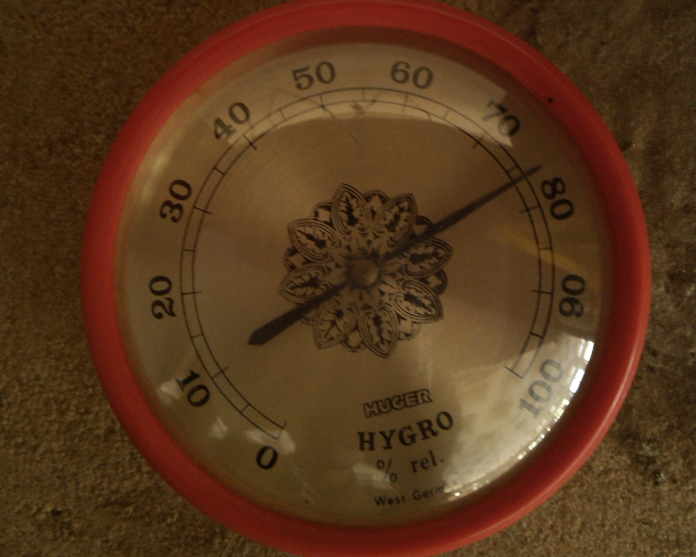

The 12-hour salt test. A bag, a capful of salt, and by morning you know if the number on your humidor is real →
Read 5 points low and you add water to a box that's already wet. Read high and the humidor dries out while the dial looks fine.
The figure comes from the US National Bureau of Standards, now NIST. Normal room temperature barely moves it.
| 01 | Table salt |
| 02 | A little water |
| 03 | A bottle cap |
| 04 | A resealable freezer bag |
Fill the cap with salt and dampen it until it looks like wet sand. The salt shouldn't dissolve, and no water should pool on top.
| 02 | Cap and hygrometer in the bag, side by side. The salt must not touch the hygrometer. |
| 03 | Seal the bag along its full length. A leaky bag won't hold 75. |
| 04 | Leave it at a steady room temperature, away from radiators, sun and draughts. |
Humidor set-up guides say 8–12 hours; Boveda says at least 24 for its own kit. Waiting longer does no harm.
Dry room air changes the reading quickly. If the dial has an adjustment screw, set it to 75. If not, write the offset on tape on the back.
| ✕ | Too much water: salty puddle, not wet sand |
| ✕ | Salt touching the hygrometer |
| ✕ | A bag that isn't sealed all the way |
| ✕ | A spot by a window, radiator or vent |
| ✕ | Reading it too soon, or outside the bag |
Boveda's advice. Full guide, with the two-point check: link in bio. We don't sell tobacco.